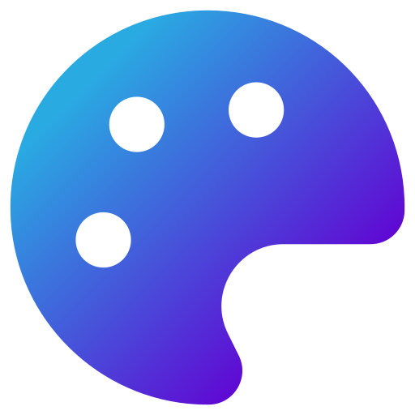

Parison Raphaël
Portrait
Sortilèges
Grimoire
Chronique
Inspirations
Œuvres
Contact
Alternance (2 ans) — sept. 2026
III
Technique · Méthode · Savoir-être
Le Grimoire
Outils
Digital & méthode

Workflow
Savoir-être
Autonomie
Écoute active
Rigueur
Travail d'équipe
Rituel — Le Serpent
✕
Score : 0
Flèches pour jouer · Échap pour fermer · Entrée pour rejouer